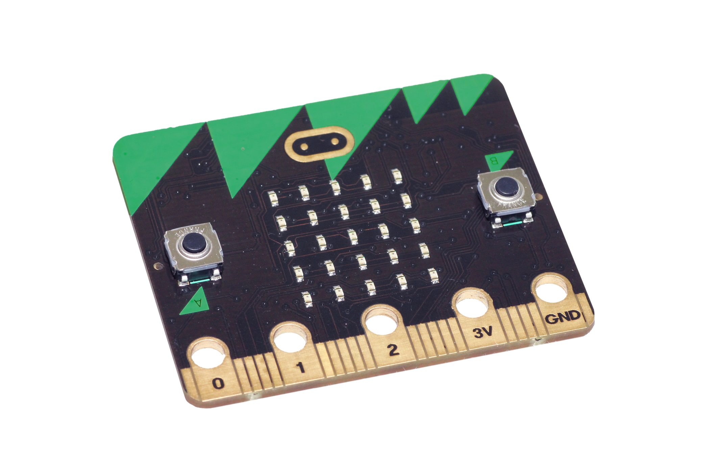

Camping Environment Assistant
Leaving Cert - Computer Science Coursework - 2026
1. Meeting The Brief

Artefact Summary
- My artefact is a "Camping Environment Assistant".
- My embedded device, a Microbit, upon digital input from button A, collects analog data (Temperature, light level, sound level).
This data is logged to a csv file on the device, which can then be processed through my Python programme on a computer.
- The device also has a built in compass which upon digital input from button B, displays through the LED display as N, S, E, W
respectively.
- Upon digital input from both buttons A and B, the device displays and "SOS" message on the LED display, and emits a
loud sound through the built in speaker.
- The adaptive Python system processes the data collected by the Microbit, and with user input for their preference,
determines and displays the environment with most optimal conditions for camping.
- The programme considers possible disaster-risk factors (such as high temperatures),
and if any are present, displays a warning message to the user.
- The programme also displays 2 "what-if" scenarios, which show the user how the optimal environment would change
if scenarios such as "What if temperatures increase by 5 degrees due to drought conditions?" were to occur.
Video Demonstration